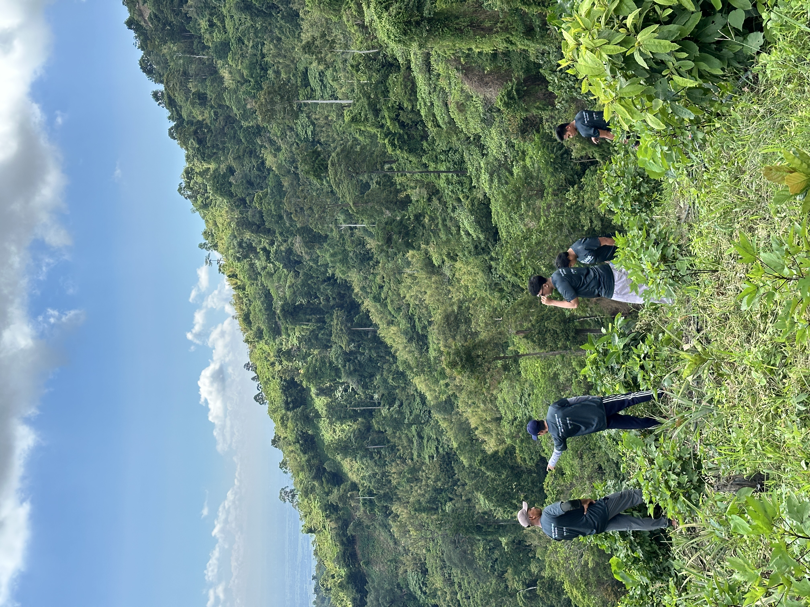

About Aniya
Aniya lets anyone farm no land, no experience needed. Through a simple online dashboard, you can grow real coffee trees, crops, or even livestock on actual farmland in Sitio Dueg, Tarlac, Philippines.



This project is built and supported by The Four-Leaf Clover Coffee and Clover Coffee Reserves in partnership with Farm to Cup Philippines, with land and operations based in Sitio Dueg, San Clemente, Tarlac.
We make it easy to start, track your farm's progress, receive updates with photos, and even share in the harvest. Whether you're living in the city or just want to make a difference, Aniya helps you connect to the land and grow something that matters.
"Aniya" comes from the Filipino words "ani" (harvest) and "niya" (yours), meaning the harvest is yours.